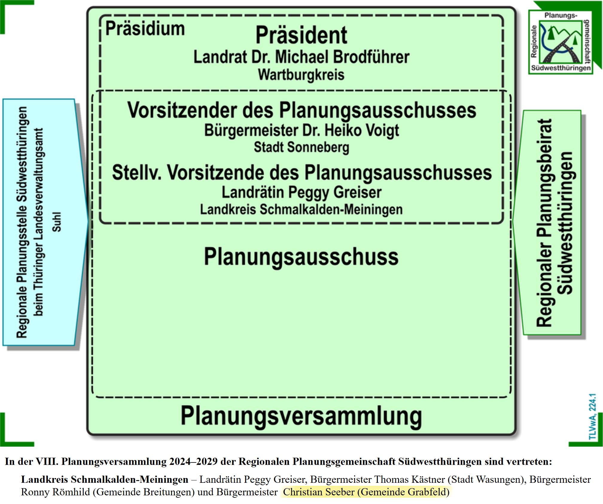
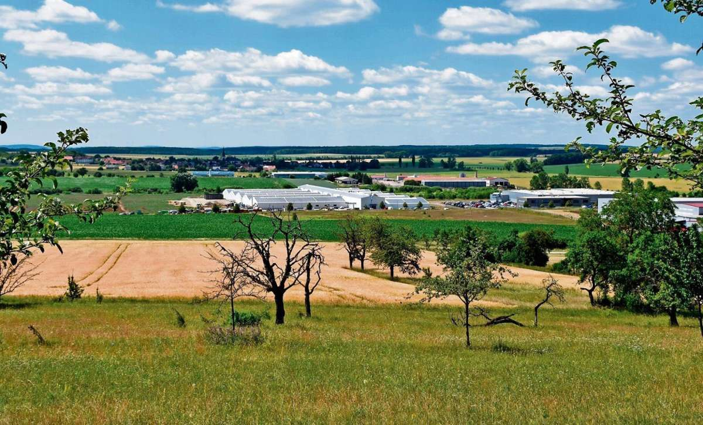
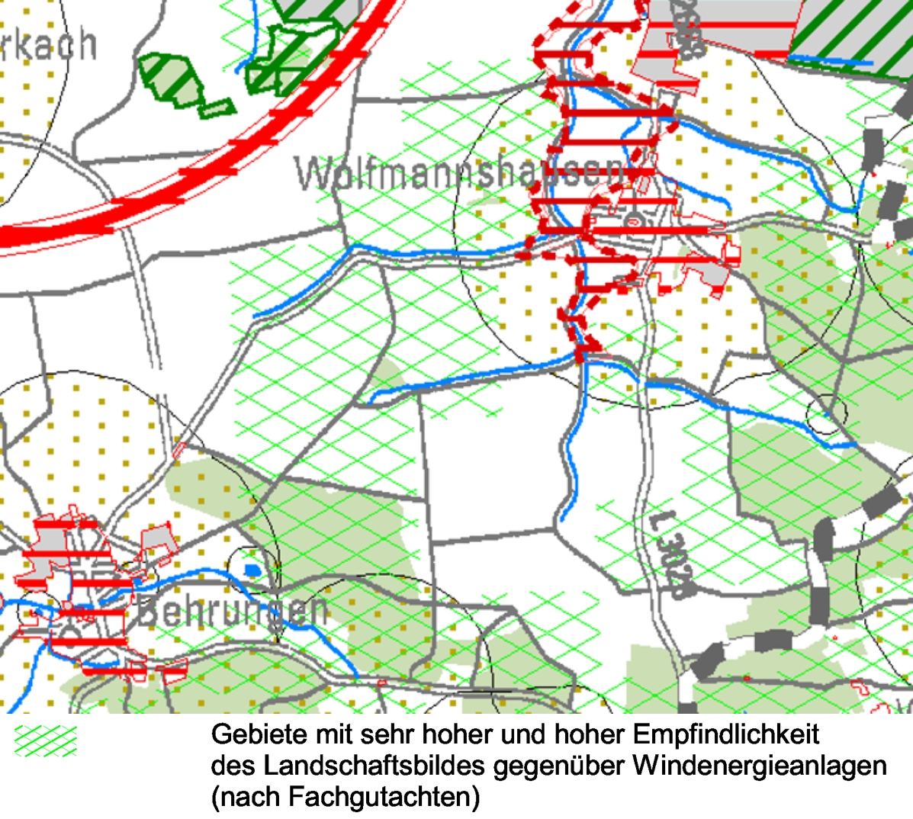
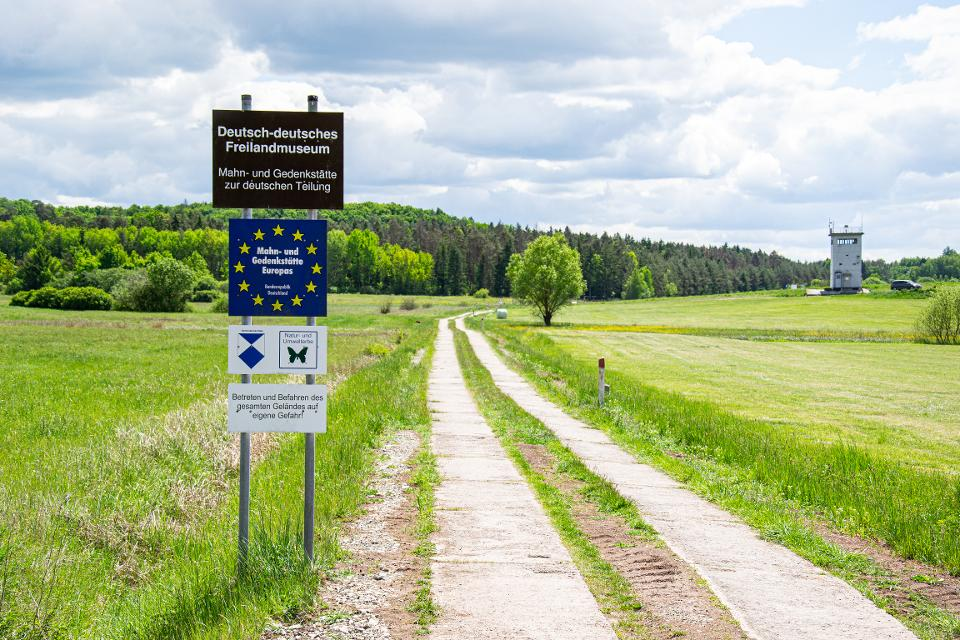
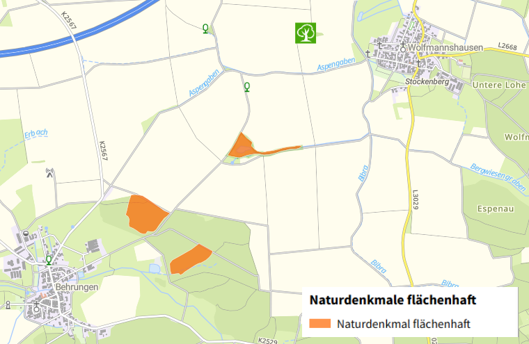
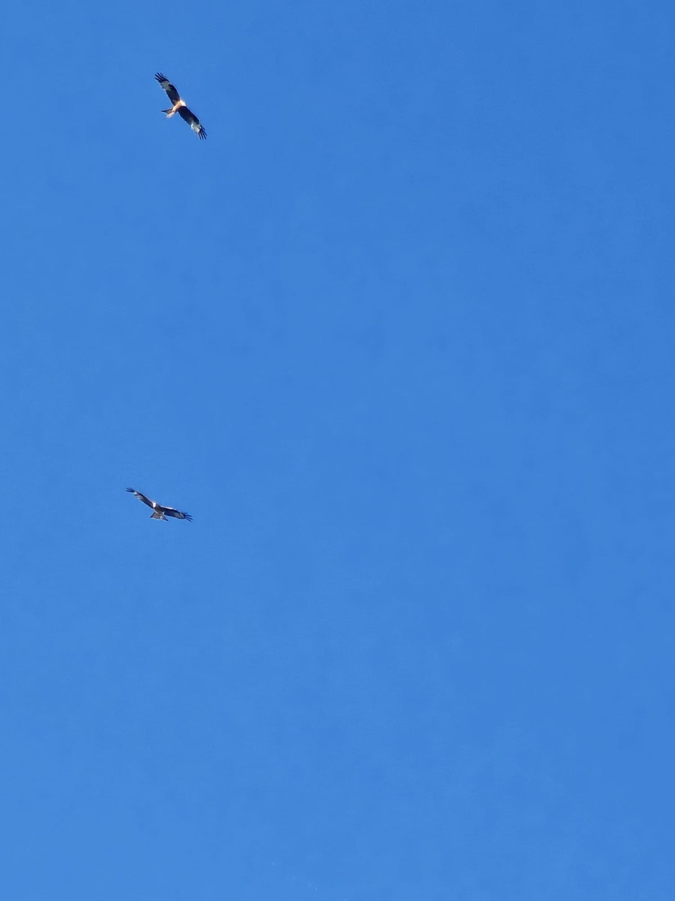
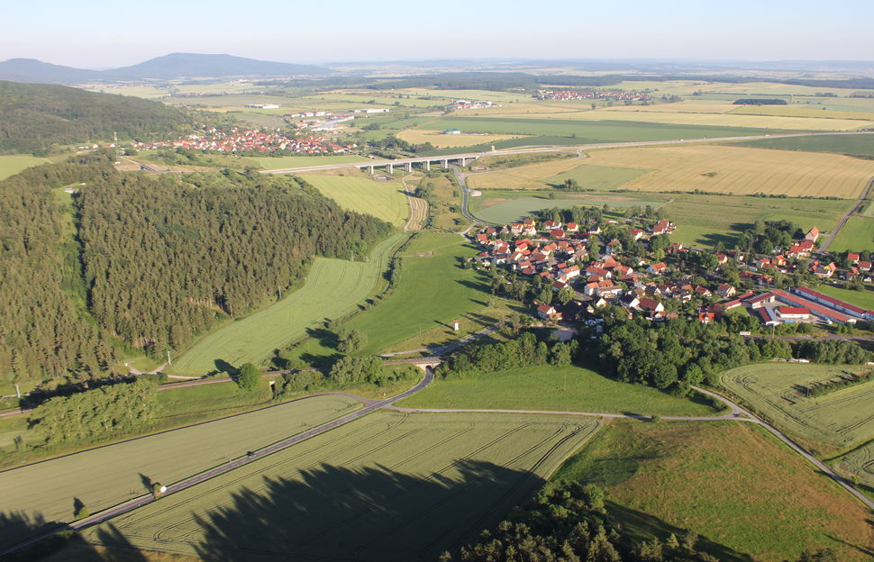
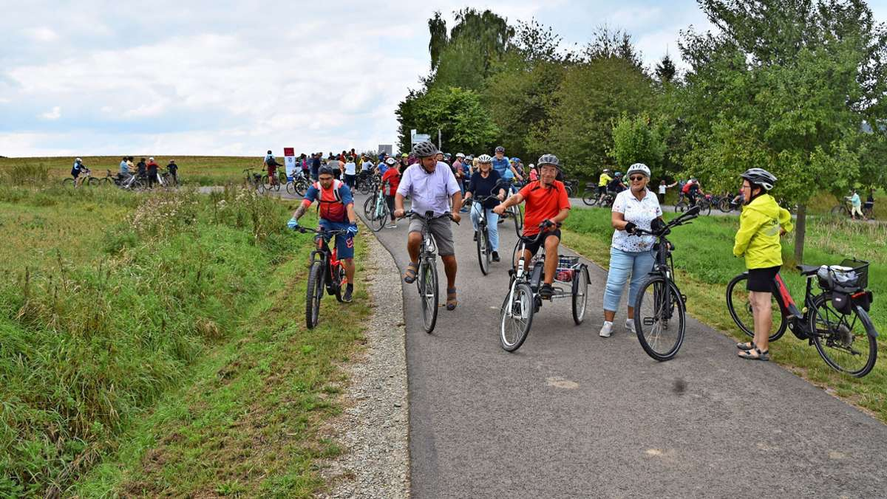

Fehler beim geplanten Windpark Behrunger Höhe
Wir haben die Unterlagen geprüft — und entscheidende Fehler gefunden. Wir zeigen wo die Planung nicht standhält.
Fehlerhafte Windhöffigkeit: Ein zentraler Mangel im Verfahren
Die Windhöffigkeit ist eine zentrale Grundlage für die Beurteilung der Eignung eines Standorts für Windenergieanlagen. [Duden] Sie beschreibt das durchschnittliche Windaufkommen und ist damit ein maßgeblicher Indikator für die zu erwartende Energieausbeute. Hier macht der Entwurf einen entscheidenden Fehler: Am Standort W-31 liegt die Windhöffigkeit bei lediglich 5,84 m/s [Global Wind Atlas]. Demgegenüber wird im Prüfbogen eine Windhöffigkeit von 6,7 - 7,0 m/s angegeben. Diese Abweichung stellt die Belastbarkeit der Standortbewertung grundlegend infrage.
Falscher Standort laut Landesstudie
Die Präferenzraumstudie des Thüringer Ministeriums für Infrastruktur und Landwirtschaft beschreibt, dass das Grabfeld äußerst windarm ist. In der Studie heißt es:
„Als äußerst windarm sind dagegen naturgemäß die Flussniederungen der Werra einschließlich ihrer Nebenflüsse, Schleuse, Ulster und Suhl sowie das Grabfeld zu nennen. […] Dabei wirken sich Rhön und Thüringer Wald durch ihre Streichrichtung quer zur Hauptwindrichtung extrem reduzierend auf das Windpotenzial der dazwischen liegenden Täler aus."
— Quelle: Präferenzräume für Windenergienutzung in Thüringen, 2015, S. 18
Ortsteilrat Übergangen
Im Verfahren wird bei der Frage nach dem Vorliegen von Interessen an der Errichtung von Windenergieanlagen aus dem Kreis der Gemeinden bzw. Ortsteile sowie weiterer Akteure „ja“ angegeben. Nach Rückmeldungen aus den betroffenen Ortsteilen erscheint es fraglich, ob diese Angabe auf einer vollständigen und abgestimmten Einbindung der Ortsteilräte beruht.
Zudem plant das Gremium, das den Windkraftausbau organisiert und dem auch der Bürgermeister der Gemeinde Grabfeld angehört, unter Ausschluss der Öffentlichkeit darüber, welche Gebiete für die Windenergienutzung ausgewählt werden. Eine demokratische Abstimmung der betroffenen Gemeinden und Ortsteile ist dabei nicht vorgesehen.

Auch der Bürgermeister der Gemeinde Grabfeld ist seit 2024 Mitglied der 8. Planungsversammlung Südwestthüringen. Im Rahmen der Planungsgemeinschaft werden die Vorranggebiete für Windkraft ausgewiesen und geprüft.Siedlungsabstand minimal
Der Abstand zu Behrungen erreicht gerade so den gesetzlichen Mindestabstand von einem Kilometer. Bei einer maximalen Ausnutzung der Fläche würde dieser Mindestabstand nur knapp eingehalten. Dieser geringe Puffer wurde in der bisherigen Planung nicht näher gewürdigt.
 Karte des neuen Vorranggebiets mit Siedlungsabständen
Karte des neuen Vorranggebiets mit Siedlungsabständen
Vorranggebiet landwirtschaftlicher Nutzung betroffen
Die Fläche ist im Regionalplan als Vorranggebiet der Landwirtschaft ausgewiesen. Sie liegt genau im Vorranggebiet LB-75. Eine Überplanung mit Windenergieanlagen steht im Widerspruch zu dieser Festlegung.
 Aus der Regionalplanung Südwest Das geplante Windkraftprojekt liegt innerhalb des Vorranggebiets LB-75.
Aus der Regionalplanung Südwest Das geplante Windkraftprojekt liegt innerhalb des Vorranggebiets LB-75.
Bestehendes Industriegebiet weit von Maximalauslastung entfernt
Das Industriegebiet steht in erheblichem Ausmaß leer bzw. wird nicht im vorgesehenen Umfang genutzt wie das Deko-Messezentrum — ein Ausbau an anderer Stelle ist auch damit nicht zwingend erforderlich.

Das Thüringer Tor mit Blick auf das Deko-Messezentrum das derzeit nicht genutzt wird.Schützenswertes Landschaftsbild
Im Entwurf wird das Landschaftsbild als von „unterdurchschnittlicher Qualität" bezeichnet. Jeder, der schon einmal dort war, wird das Gegenteil bezeugen. Das sagen nicht nur wir — auch das Fachgutachten des Thüringer Ministeriums für Infrastruktur und Landwirtschaft stuft das Gebiet als schutzwürdig ein.

Aus der Karte der Präferenzraumstudie Südwestthüringen SüdGrünes Band als UNESCO-Welterbe? Mit Windpark fraglich.
Wer künftig im Grabfeld entlang des Grünen Bandes wandert, wird an vielen Stellen den geplanten Windenergieanlagen begegnen. Dadurch verändert sich das Landschaftsbild entlang dieses besonderen Natur- und Erinnerungsortes deutlich.
Mit dem Freilandmuseum in Behrungen liegt zudem eine wichtige Station am Grünen Band im direkten Umfeld des geplanten Windparks. Das Denkmal befindet sich auf dem Weg zu einer möglichen Anerkennung als UNESCO-Welterbe. Vor diesem Hintergrund stellt sich die Frage, ob die Auswirkungen der geplanten Windenergieanlagen auf den Denkmalwert und das Landschaftsbild im Entwurf ausreichend berücksichtigt wurden.

Wer auf dem Grünen Band zum Deutschen Freilandmuseum wandert, wird künftig durch zahlreiche Windenergieanlagen beeinträchtigt.Beeinträchtigungen des Denkmalwertes
Der geplante Windpark befindet sich im Blickfeld des jüdischen Friedhofs in Berkach. Dieser ist ein bedeutendes Denkmal, das an das jüdische Leben im Grabfeld sowie an die Deportation der Jüdinnen und Juden aus Berkach in Konzentrationslager erinnert. Durch die Errichtung der Windenergieanlagen könnte das historische Erscheinungsbild des Friedhofs und damit auch sein Denkmalwert beeinträchtigt werden, da sich die Anlagen direkt im Sichtfeld befinden.
Außerdem wurden in der Nähe prähistorische Hügelgräber entdeckt. Auch diese historischen Fundstellen könnten durch den Bau des Windparks beeinträchtigt werden.
Naturdenkmal Hofsee gefährdet
Im Umweltbericht wird bei der Frage nach bestehenden oder geplanten Schutzgebieten ausdrücklich mit „Nein“ angegeben, dass sich keine Schutzgebiete im Plangebiet befinden. Diese Angabe ist jedoch nicht zutreffend, da das Naturdenkmal (ND) Hofsee innerhalb des vorgesehenen Bereichs liegt; zudem befinden sich weitere geschützte Naturdenkmale und Schutzobjekte in unmittelbarer Nähe. Naturdenkmale stellen wertvolle Rückzugsräume für zahlreiche Tier- und Pflanzenarten dar und erfüllen als Trittsteinbiotope eine wichtige Funktion im Biotopverbund.

Wie auf der Karte zu sehen befindet sich der Hofsee direkt innerhalb des geplanten WindparkgebietesGefährdung von Brutvogelarten
Im Planungsentwurf wird bei den Dichtezentren kollisionsgefährdeter Brutvogelarten ein „Nein“ angegeben. Das Gebiet stellt jedoch insbesondere aufgrund des Hofsees und der angrenzenden Lebensräume einen bedeutenden Lebens- und Nahrungsraum für Arten wie Rotmilan, Wanderfalke und Uhu dar. Auch zahlreiche Aufnahmen von Anwohnerinnen und Anwohnern dokumentieren das regelmäßige Vorkommen dieser Arten im Umfeld des Plangebiets (siehe Galerie unten).

Sichtung eines Rotmilans im Bereich des geplanten WindparksTechnische Vorbelastung
Autobahnnähe, Industriegebiet und im Bau befindliches Umspannwerk belasten das Grabfeld bereits erheblich vor. Das Abwägungsgebot nach § 7 Abs. 2 ROG verlangt, diese Vorbelastungen in ihrer Gesamtheit zu betrachten - eine zusätzliche Ausweisung als Windvorranggebiet ist damit nicht vereinbar.

Blick auf das Grabfeld mit Blick auf die Autobahn und angrenzende IndustrieRadwegausbau konterkariert
In den letzten Jahren wurde das Radwegnetz im Grabfeld auch dank Fördermitteln erheblich ausgebaut und ausgeschildert, um den Erholungswert des Gebiets für Besucher und Anwohner zu steigern. Die geplanten Windenergieanlagen würden diese Investition konterkarieren: Da der Windpark direkt im Radwegenetz zwischen Behrungen und Wolfmannshausen liegt, ginge der Erholungswert der Region durch die visuelle und akustische Belastung stark verloren.

Radfahrer unterwegs im GrabfeldWichtige weiterführende Informationen und Links
-
🔗
-
🔗
-
🔗
-
🔗
Gründe gegen den Bau von W31
Aus der offiziellen Präferenzraumstudie, die vom Thüringer Ministerium für Infrastruktur und Landwirtschaft in Auftrag gegeben wurde, ergibt sich ein klares Bild über den geplanten Standort W-31 im Grabfeld. Die Studie benennt gleich mehrere Faktoren, die gegen eine Ausweisung als Windvorranggebiet sprechen.

Geringes Windpotenzial im Grabfeld
Laut der Ministeriumsstudie sind im Grabfeld weiträumig Windleistungen von unter 100 W/m² zu erwarten. Rhön und Thüringer Wald verlaufen quer zur Hauptwindrichtung (Südwest) und wirken dabei wie ein Windschatten (vgl. S. 18 der Präferenzraumstudie) – die erforderliche Mindestwindleistung für wirtschaftlich tragfähige Windenergienutzung liegt jedoch bei 200 W/m² (vgl. S. 16).

Empfindliches Landschaftsbild
Die Präferenzraumstudie stuft das Landschaftsbild im geplanten Windvorranggebiet Grabfeld als besonders wertvoll und schützenswürdig ein, was einer Windenergienutzung entgegensteht (siehe Karte Südwestthüringen: https://innen.thueringen.de/kommunales/strategische-landesentwicklung-und-demografie/raumordnung-und-landesplanung/praeferenzraumstudien-fuer-die-windenergienutzung).

Kleinräumig wechselndes Windpotenzial
Die Studie des Ministeriums stellt die kleinräumigen Wechsel von hohem und niedrigem Windpotenzial im Grabfeld heraus, was die Planungsunsicherheit erhöht, da die Ergebnisse der Flächenanalyse nicht verlässlich auf konkrete Standorte übertragen werden können. Ein Windvorranggebiet setzt jedoch ein zusammenhängendes, flächig nutzbares Areal mit konsistentem Windpotenzial voraus – eine Voraussetzung, die das Grabfeld nicht erfüllt (siehe S. 18 Präferenzraumstudie).

Technische Vorbelastung
Das Grabfeld ist durch Autobahnnähe, ein vorhandenes Industriegebiet und ein im Bau befindliches Umspannwerk technisch bereits erheblich vorbelastet. Das Abwägungsgebot nach § 7 Abs. 2 ROG verpflichtet die Planungsträger, diese Belange nicht isoliert, sondern in ihrer Gesamtheit und gegenseitigen Wechselwirkung zu betrachten – mit der Folge, dass die kumulative technische Vorbelastung einer zusätzlichen Ausweisung als Windvorranggebiet entgegensteht (siehe https://windwiderstand.de/regionalplan/#W-31).
Natur nicht gefährdet? – Die Bilder sprechen eine andere Sprache
Der Entwurf bezeichnet das Landschaftsbild im betroffenen Gebiet als unterdurchschnittlich. Die im Entwurf enthaltene Einzelfallprüfung kommt zudem zu dem Schluss, dass weder Dichtezentren für kollisionsgefährdete Brutvogelarten noch Vogelzugkorridore vorliegen (S. 199). Fledermausschutz und artspezifische Mindestabstände zu störungsempfindlichen Arten werden ebenfalls verneint. Die Aufnahmen der Anwohner zeichnen jedoch ein anderes Bild.

Sichtungen von Brutvögeln und Artenschutztieren
Das Windvorranggebiet W-31 im Grabfeld auf einen Blick
Hier sind die Eckdaten zum Windvorranggebiet W-31 aus dem 2. Entwurf des Regionalplans Windenergie für Südwestthüringen.
336
Hektar
14
Geschätzte Anlagen
1 km
Abstand zu Behrungen
100 W/m²
Windleistung im Grabfeld (bei 215 W/m² ist Mindestwert für Windradnutzen)
Was Sie zum 2. Entwurf wissen sollten
Die wichtigsten Fragen zum Regionalplan und zur Stellungnahme – kurz erklärt.
Was ist ein Windvorranggebiet?
Ein Vorranggebiet ist eine im Rahmen der Raumordnung festgelegte Fläche, die gezielt für die Nutzung durch Windkraftanlagen reserviert wird.
Wer entscheidet über den Bau?
Über den Regionalplan entscheidet ein Gremium aus Landräten und Oberbürgermeistern. Die Bürgermeister der betroffenen Gemeinden wurden in der Vorplanungsphase unter Verschwiegenheitsverpflichtung eingebunden. Eine unmittelbare demokratische Mitbestimmung besteht dabei nicht.
Was passiert nach dem 20. Juli 2026?
Nach Fristende werten die Landräte und Oberbürgermeister alle Stellungnahmen aus. Die Abwägung fließt in den finalen Regionalplan ein. Wer jetzt schweigt, verzichtet auf Einfluss.
Was genau ist der 2. Entwurf des Regionalplans?
Der 2. Entwurf legt 40 neue Vorranggebiete für Windenergie auf 1,8 Prozent der Regionsfläche fest. Er liegt bis zum 20. Juli 2026 öffentlich aus und ist die Grundlage für Ihre Stellungnahme.
Kann ich nach Fristende noch Einwände erheben?
Formell ist die Stellungnahmefrist strikt. Verspätete Einwände müssen im weiteren Verfahren nicht berücksichtigt werden. Nutzen Sie das Fenster bis zum 20. Juli 2026.
Wie reiche ich eine Stellungnahme ein?
Über das Formular auf Windwiderstand.de können Sie ihre Stellung einreichen.
Noch offene Fragen?
Schreiben Sie uns eine Nachricht – wir antworten zeitnah und direkt.

Haben Sie Ihre Einwände schon eingereicht?
Bis zum 20. Juli 2026 liegt der 2. Entwurf aus. Danach entscheiden Landräte und Oberbürgermeister. Reichen Sie Ihre Stellungnahme noch heute ein.